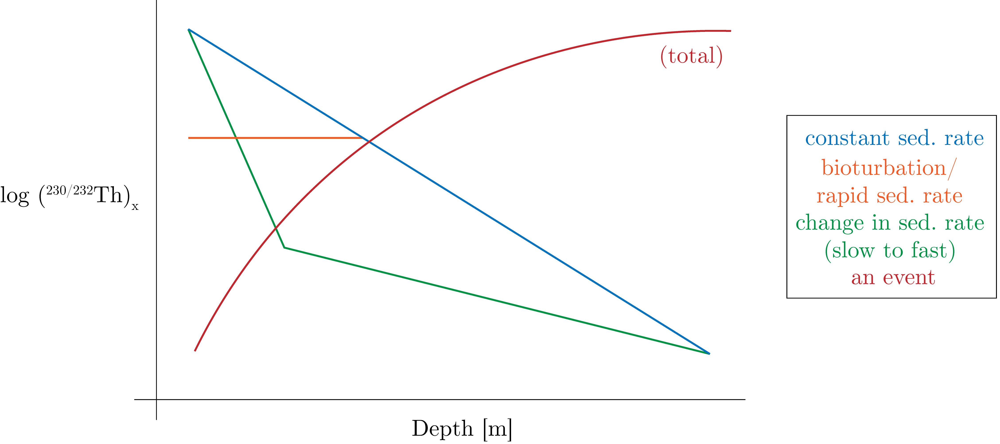
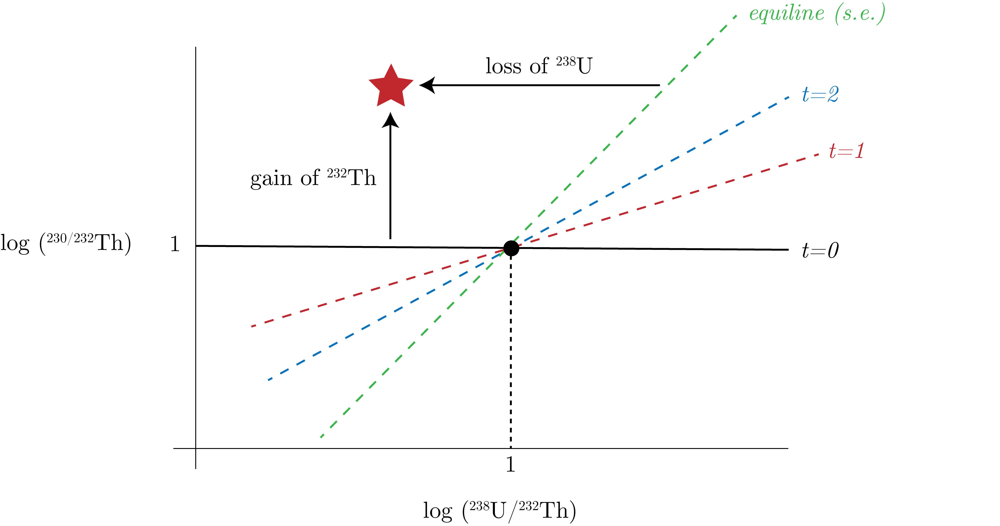
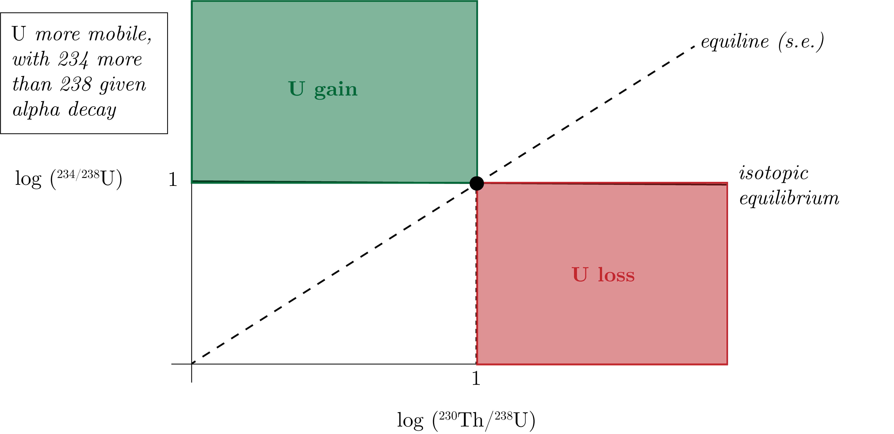
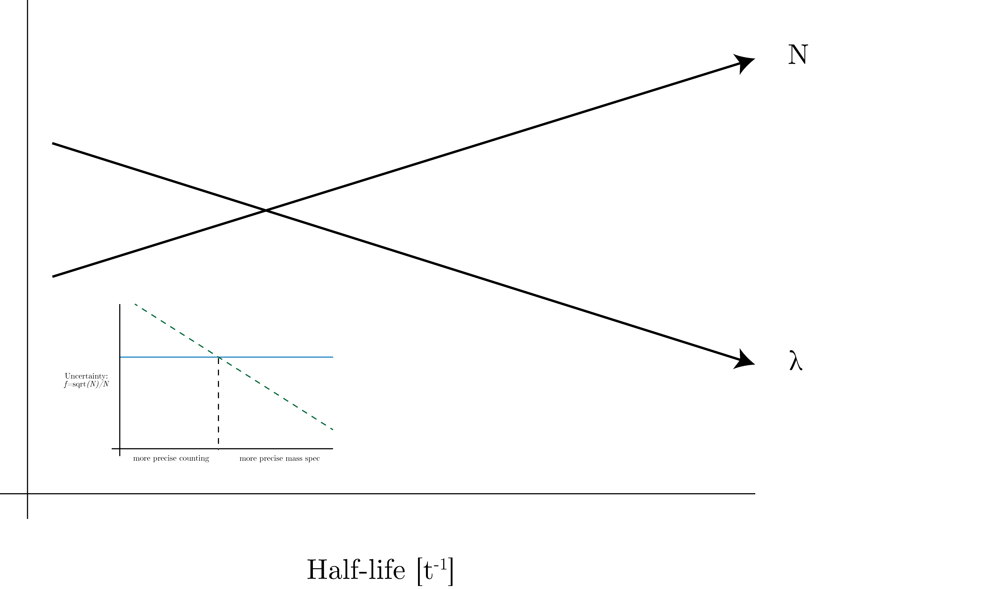

We can continue our work with the decay series of $^{238}$U, we consider the amount of the daughter left, $N_2$, from a parent, $N_2$, in which we sum the input and the output from decay:
\begin{equation}
N_2 = \underbrace{\frac{\lambda_1}{\lambda_1 - \lambda_2}N_{1,0}\left(\exp\left[-\lambda_1 t\right] - \exp\left[-\lambda_2 t\right]\right)}_{N_2 \text{ atoms produced by the decay of the parent, } N_1, \text{ but not decayed yet}} + \underbrace{N_{2,0}\exp\left[-\lambda_2 t\right]}_{N_2 \text{ atoms originally present and not yet decayed}}
\end{equation}
We introduce the notation $\left(^iX \right) $, which denotes:
\begin{equation}
\left(^iX\right) = \lambda_i N_i.
\end{equation}
For a specific system, let's consider $^iX = ^{230}$Th, which is described by:
\begin{equation}
\left( ^{234}\text{Th} \right) = \underbrace{\left( ^{230}\text{Th} \right)_x}_{\text{excess}} + \underbrace{\left( ^{230}\text{Th} \right)_s}_{\text{support}},
\end{equation}
where we have that the $\text{excess}$ is from sources outside of our "box" we are modeling/bean-counting in and $\text{support}$ is produced within the box from its parent, $^{234}$U.
We can consider depth profiles in sediment of $^{230}$Th, given in Fig. 1.

Fig. 1: Different regimes for sedimentation rates.
To understand the red regime (for total activity), we consider the following.
We assume that $^{238}$U decays to $^{230}$Th and normalize to the long-lived Th isotope.
So, we have:
\begin{equation}
^{230}\text{Th} = \frac{\lambda_{234}}{\lambda_{230} - \lambda_{234}} ^{234}\text{U}_0\left( \exp\left[-\lambda_{234}t\right] - \exp\left[-\lambda_{230}t\right]\right),
\end{equation}
then as secular equilibrium we have that:
\begin{equation}
\left( ^{234}\text{U} \right) = \left( ^{238}\text{U} \right) = ^{234}\text{U}\lambda_{234}.
\end{equation}
We further note that:
\begin{equation}
\lambda_{230} - \lambda_{234} \sim \lambda_{230},
\end{equation}
which means that:
\begin{equation}
\exp\left[-\lambda_{234}t\right] \sim 1.
\end{equation}
Therefore, we have that:
\begin{equation}
\lambda_{230} \cdot ^{230}\text{Th} = \lambda_{234}\cdot^{234}\text{U}_0\left( 1 - \exp\left[-\lambda_{230} t\right] \right),
\end{equation}
and thus:
\begin{equation}
\left( ^{230 / 232}\text{Th} \right) = \left( ^{230 / 232}\text{Th} \right) _{x,0} \exp\left[-\lambda_{230}t\right] + \frac{^{238}\text{U}_0}{^{232}\text{Th}_0}\exp\left[-\lambda_{238}t\right].
\end{equation}
We plot this in Fig. 2.

Fig. 2: $^{230}$Th-$^{238}$U Isochron diagram.
We can view this as a change in the support of $^{230}$Th over time, at which the equiline is define as the secular equilibrium point.
We can also study the $^{238}$U-$^{234}$U system in Fig. 3.

Fig. 3: $^{234}$U-$^{238}$U Isochron diagram.
The green zone is seawater!
We can also consider the counting statistics, as in Fig. 4.

Fig. 4: Counting statistics, comparing mass spec. precision to counting.